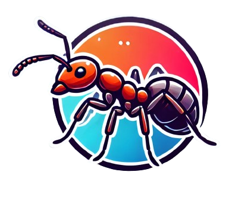
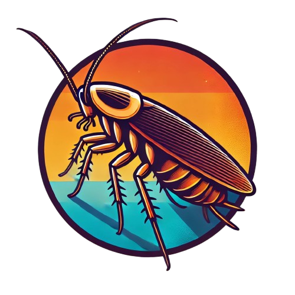
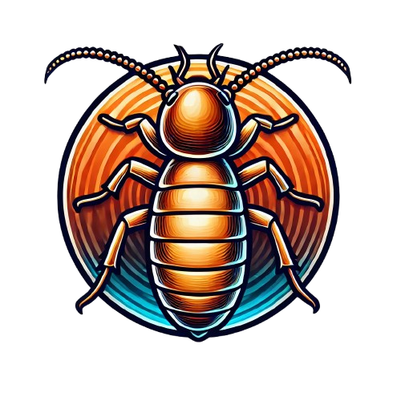
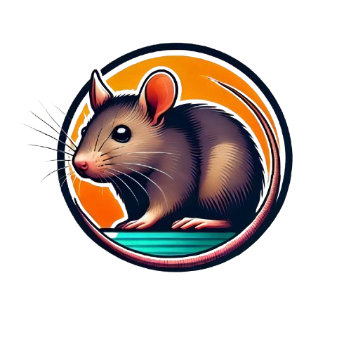
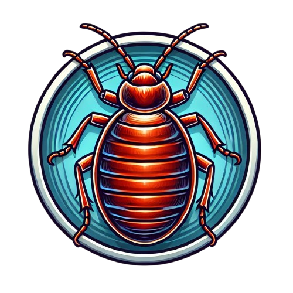
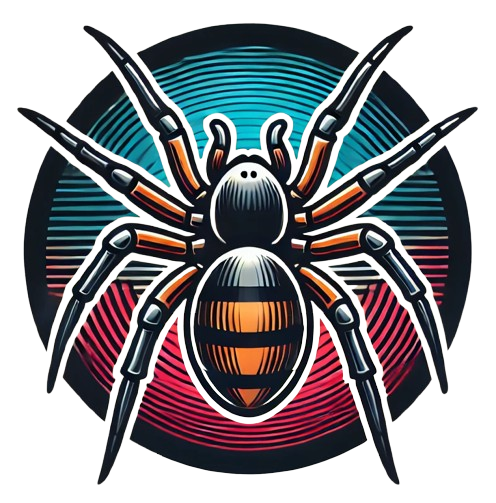
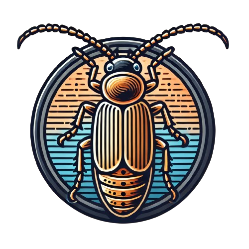
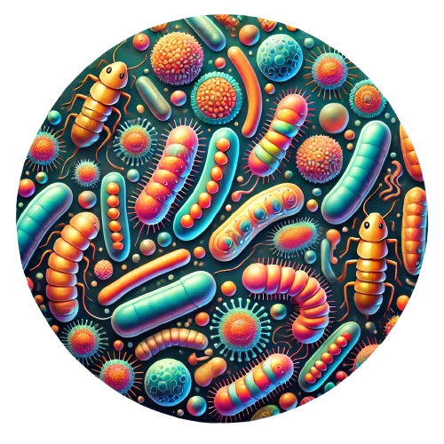

Ants
Ant infestations are common in home, commercial, or residentials, where they invade kitchens and food storage areas. Our ant control service targets the colony, preventing damage and contamination. Protect your home, commercial, or residential from these persistent invaders with expert pest management.

Cockroaches
Cockroaches are not only unsightly but also carry dangerous diseases like salmonella and E. coli. Our post-construction cockroach control ensures your home, commercial, or residential remains a safe, healthy environment. Keep these resilient pests at bay with our trusted services.

Subterranean Termites
Subterranean termites silently destroy wooden structures, compromising the safety of your home, commercial, or residential. Our pre-construction termite treatment provides long-lasting protection, preventing costly damage. Secure your property from termite infestations with our expert solutions.

Rodents
Rodents, including rats and mice, are notorious for spreading diseases and causing property damage. Our rodent control service targets these pests, ensuring a safe, rodent-free home, commercial, or residential. Protect your family and property with our effective rodent management.

Bedbugs
Bedbugs are a nightmare for any household, causing sleepless nights and itchy bites. Our bedbug treatment eliminates these pests, ensuring your home, commercial, or residential remains a sanctuary. Sleep soundly with our comprehensive bedbug control services.
Flies
Flies are more than just a nuisance; they spread bacteria and contaminate food, posing health risks. Our fly management solutions effectively reduce fly populations, ensuring a hygienic, fly-free home, commercial, or residential. Keep your environment safe with our expert fly control.
Mosquitoes
Mosquitoes are carriers of diseases like dengue, malaria, and Zika virus. Our mosquito management service reduces their presence, safeguarding your home, commercial, or residential from these dangerous pests. Protect your family’s health with our professional mosquito control.
House Lizards
House lizards can be unsettling and may carry salmonella. Our lizard management service effectively reduces their numbers, keeping your home, commercial, or residential free from these reptiles. Enjoy a lizard-free environment with our targeted pest control solutions.
Garden Termites
Garden termites can wreak havoc on your outdoor spaces, damaging wooden structures and plants. Our specialized termite treatment safeguards your garden and landscape. Ensure a healthy, termite-free environment for your outdoor living areas.

Spiders
Spiders create unsightly webs and can cause fear or discomfort in your household. Our spider treatment targets these pests, keeping your home, commercial, or residential clean and spider-free. Maintain a safe, web-free environment with our expert spider control.
Snakes
Snakes can pose serious dangers, especially in gardens and outdoor areas. Our snake control service ensures the safe removal and prevention of snakes around your home, commercial, or residential. Protect your property and family with our professional snake management.

Wood Borers
Wood borers can cause significant damage to wooden structures, leading to costly repairs. Our wood borer treatment effectively eliminates these pests, preserving the integrity of your property. Safeguard your home, commercial, or residential’s wooden elements with our specialized pest control.

Micro-organism
Harmful microorganisms can compromise the health and hygiene of your living spaces. Our sterifume service disinfects and sanitizes your environment, ensuring it is free from dangerous microbes. Maintain a clean, healthy home, commercial, or residential with our advanced microbial control solutions.